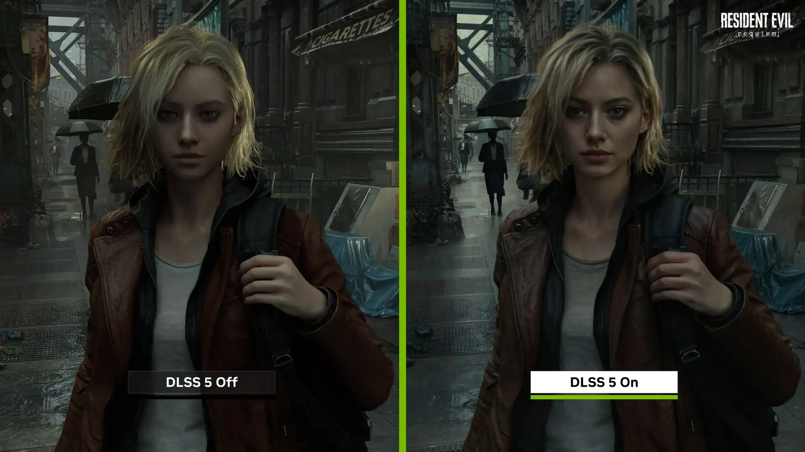

NVIDIA DLSS 5 promete levar os gráficos dos games a um novo nível
Nova geração da tecnologia de renderização neural da NVIDIA utiliza inteligência artificial para aproximar os gráficos em tempo real do fotorrealismo.

A NVIDIA apresentou uma nova geração de sua tecnologia de renderização com inteligência artificial. O DLSS 5 chega com a proposta de transformar a maneira como os gráficos dos videogames são produzidos em tempo real.
Diferentemente das primeiras versões do DLSS, que tinham como principal objetivo aumentar o desempenho por meio de técnicas de reconstrução de imagem, o DLSS 5 busca também elevar significativamente o nível de realismo visual das cenas.
Uma nova geração de renderização
O grande destaque do DLSS 5 é sua Renderização Neural Guiada por 3D. A tecnologia utiliza informações provenientes do próprio jogo, como dados de cor e movimento, para que um modelo de inteligência artificial possa aprimorar a aparência final da imagem.
Segundo a NVIDIA, o sistema consegue adicionar características visuais como iluminação e materiais mais realistas, mantendo essas características consistentes entre os quadros.
"O DLSS 5 é o momento GPT para os gráficos,
combinando renderização artesanal com IA
generativa para oferecer um salto dramático
no realismo visual."
— Jensen Huang, CEO da NVIDIA
A inteligência artificial como parte dos gráficos
A proposta da NVIDIA é utilizar a inteligência artificial não apenas para reconstruir uma imagem que já foi renderizada, mas para ajudar a criar características visuais que seriam extremamente difíceis de reproduzir utilizando somente os métodos tradicionais de renderização em tempo real.
Isso pode representar uma mudança importante para os desenvolvedores. Efeitos de iluminação, materiais, pele e outros elementos visuais podem receber um nível maior de detalhamento sem que todo o trabalho precise ser realizado exclusivamente pelo processo tradicional de renderização.
DLSS 5 chega aos games
Depois de ser apresentado oficialmente pela NVIDIA em março de 2026, o DLSS 5 chegou aos jogadores em setembro.
A tecnologia estreou no NBA 2K27 e está disponível para as GPUs GeForce RTX Série 50. A NVIDIA também anunciou suporte ou planos de suporte para diversos outros títulos.
Entre os jogos anunciados estão títulos como Resident Evil Requiem, Starfield, Hogwarts Legacy, Assassin's Creed Shadows e outros grandes lançamentos.
O futuro dos gráficos nos videogames
O DLSS 5 mostra como a inteligência artificial está deixando de ser apenas uma ferramenta para aumentar a taxa de quadros e passando a participar diretamente da construção da imagem exibida pelos jogos.
Ainda será necessário observar como a tecnologia será utilizada pelos desenvolvedores e como ela se comportará em diferentes jogos. Porém, a chegada do DLSS 5 representa mais um passo na busca por gráficos cada vez mais próximos do realismo.
Para os jogadores, a promessa é clara: mundos virtuais mais detalhados, iluminação mais convincente e uma experiência visual cada vez mais próxima do cinema.